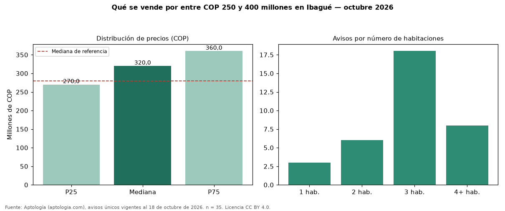

Qué se vende por entre COP 250 y 400 millones en Ibagué — octubre 2026
En Ibagué, 35 avisos únicos de venta piden entre COP 250 y 400 millones; la mediana del grupo es COP 320 millones. Son el 19 % de toda la oferta de venta en Ibagué. Con ese presupuesto, el área mediana es 92 m² (en toda la oferta: 79 m²). Lo más común son inmuebles de 3 habitaciones (51 % de los avisos con dato). El 74 % son apartamentos y el 20 % casas. Por metro cuadrado, la mediana es COP 3.164.557/m² (+1 % frente a COP 3.125.000/m²), puesto 5 de 6 ciudades comparables. El estrato más frecuente es 4. Datos abiertos CC BY 4.0 de Aptología; fuente y búsqueda de inmuebles: https://www.aptologia.com/venta/ibague. Archivos: PDF de 2 páginas, CSV con las cifras y gráfica PNG.

| Avisos únicos | 35 |
|---|---|
| Percentil 25 | COP 270.000.000 |
| Mediana | COP 320.000.000 |
| Percentil 75 | COP 360.000.000 |
| Mediana por m² | COP 3.164.556 |
Fuente: avisos vigentes de portales inmobiliarios recopilados por Aptología, deduplicados (mínimo 30 avisos únicos por celda). Precios pedidos, no cerrados. Fecha: 2026-10-18.